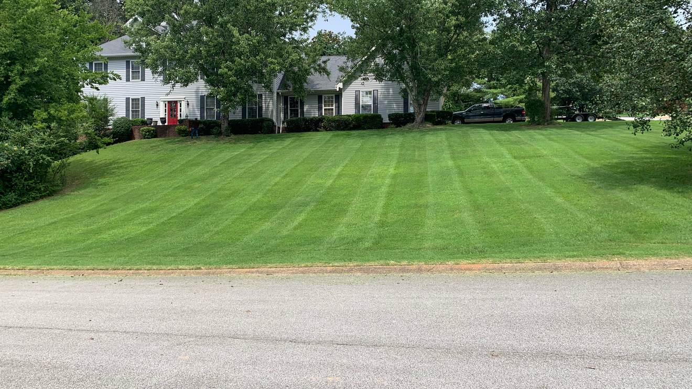
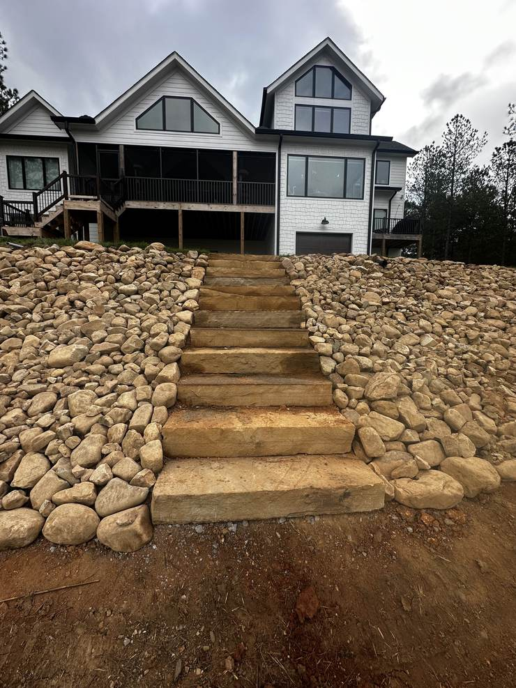
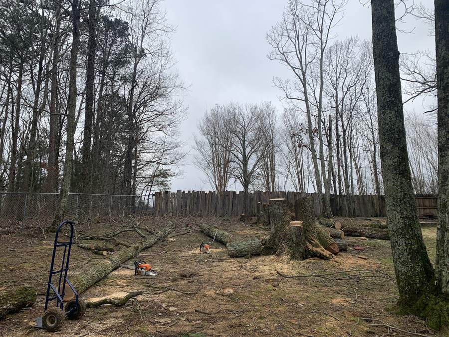
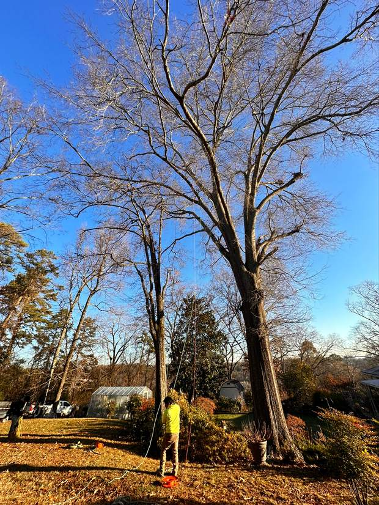
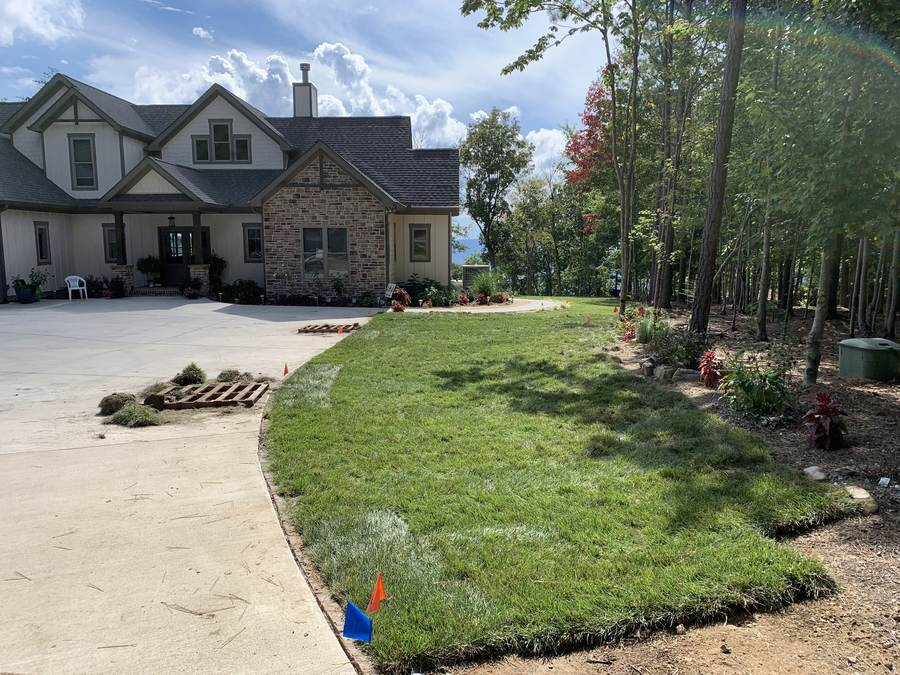
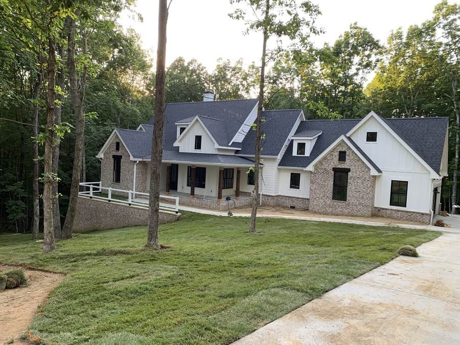
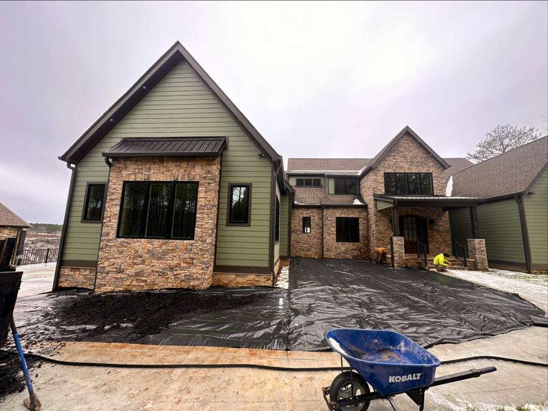
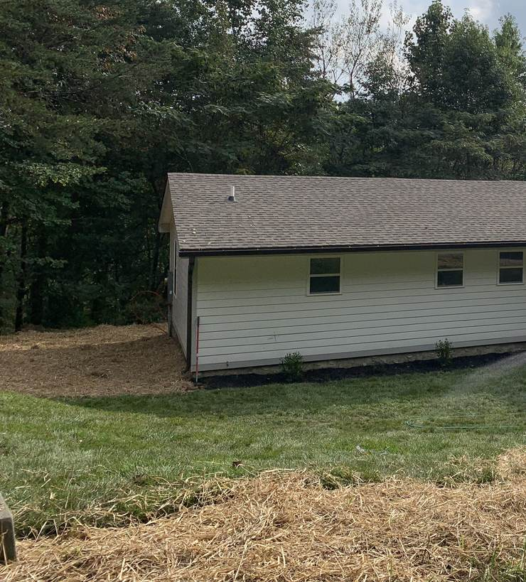

An unsolicited demonstration page, built from public information. Dalin Landscaping & Tree Service has not been contacted and has not approved this. Nothing here is indexed or linked anywhere. Say the word and it comes down.
(423) 681-0970Landscaping, hardscaping, tree work, grading and land clearing — around East Ridge and across the Chattanooga side of Hamilton County.
Boulders set into a bluff lot. A retaining wall with drainage built in behind it so the ground stops washing out. Sod laid over a real layer of soil instead of straight onto hardpan. Five fresh stumps where five trees used to be. Every job pictured on this page is one of their own photographs.

Their own photograph.
What they do
Google files this business under “Lawn care service.” Their own page tells a wider story, and so do their photographs. Here is what there is public evidence of.
Dry-laid sandstone treads cut into a rock slope. Retaining walls built with drainage behind them. Boulders set into a bank so the bank stays where it is.
Rigged crown work on mature hardwoods, and full removals — trunks bucked down and stumps cut flush. Trimming too, on trees that only need thinning.
New lawns laid over prepared soil, around new builds and established houses alike, with irrigation lines marked before anything goes down.
Subgrade worked and sheeted before planting and paving. Wooded ground opened up and the timber taken away rather than left in a pile.
Rock placed to look like it grew there. One customer describes two fountains over 800 lbs apiece set with ground support built underneath them.
Mowing, edging and blow-down on a repeat round. Several reviewers have been customers for years rather than for one visit.
Their own Facebook page also lists excavation and demolition, and they have posted about snow removal in winter. There is no photograph of those on the Google listing, so this page does not illustrate them — but they are worth asking about on the phone.
The heavy end
Anyone with a mower can cut grass. Setting a staircase into a rock face so the treads sit level and stay level, or building a wall that takes the push of a hillside behind it, is a different trade — and it is the one this crew keeps photographing.
A customer in August described it better than a sales line could: big rocks placed organically along a bluff lot, a retaining wall around a shed with the infrastructure behind it to stop erosion, and sod laid over a good layer of soil underneath.

The work
No stock photography is used anywhere on this page. Every image below was uploaded to their Google listing by the business itself.






Two further photographs from the same set appear higher up this page. One more was left out on purpose — see the note at the foot of the source.
What customers wrote
Quoted by date only, never by name. These are the parts about the work itself.
“He placed big rocks organically along our bluff lot. He built an amazing retainer wall around our shed with an infrastructure to avoid erosion. He laid sod in our back with a great layer of good soil beneath.”
August 2026
“They clearly know how to properly lay sod, and my yard looks beautiful.”
March 2026 — a repeat customer
“Dalin and crew trimmed 2 trees for us. Before leaving, 2 of our neighbors hired him for similar jobs.”
2022
“I have had him do several jobs for us and I am very satisfied.”
2024
“He was doing work at my home today and did a great job.”
2022
“I have been using Dalin’s service for over a year and could not recommend him more.”
2021
There are two, and they are easy to find because anyone can sort by lowest. One is a price complaint with no text. The other, four years old, is a cut that was paid for in advance and missed. Neither is hidden here, and neither is answered here — how to handle them in public is the owner’s call, not a stranger’s.
When they’re open
Most outdoor contractors around here publish Monday-to-Friday hours and a voicemail box for the weekend. This listing says open every day of the week, with a 6:30 AM start on Saturday. That is unusual enough to be worth saying out loud, so the page says it plainly instead of dressing it up.
These are the hours published on their Google listing, read on the morning this page was built. If any of them are wrong, they are the first thing to fix — wrong hours cost more work than a missing website does.
Where they work
This is the ground their own page says they cover — all of it on the Tennessee side.
No street address is printed on this page, on purpose. Where the crew is based is the owner’s business, and for a contractor who works at the customer’s property there is no reason for it to be on a website at all.
A tree too close to the house. A bank that keeps washing into the drive. A lawn that never took. Start with the phone.
(423) 681-0970